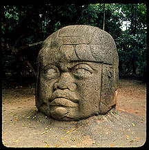

Mexico Before the Aztecs
The Origins of Central Highland
Civilization
By Ruben G. Mendoza, Director
Institute of Archaeology, CSU Monterey Bay

Aztec portrait head, circa 1400's A.D. Photo copyright Ruben G. Mendoza, 1976.
|
Mexico Before the Aztecs
By Ruben G. Mendoza, Director
|
Aztec portrait head, circa 1400's A.D. Photo copyright Ruben G. Mendoza, 1976. |
Introducing Mesoamerica
Today, Mexico City is the world's largest metropolitan center. From any vantage point, it is difficult to imagine that the city lies atop millennia of ancient artifacts, constructions, and burials. You cannot see the accumulated legacy of thousands of years of human activity, yet this region was once the home of the Aztecs, and the many cultures that came before them.
When we think of the ancient people of central Mexico, the Aztecs are usually the first to come to mind. Less well known are the ancient cultures such as Olmec, Teotihuacan, Toltec, and Chichimec. These names are synonymous with pre-Aztec culture in Mexico's central highlands. Still others -- Xicalanca, Zacateca, Cholulteca, Nuiñe, Huastec, Matlatzinca, and Chalca -- are far more obscure. Being a Mesoamerican archaeologist, I have long speculated about these most enigmatic of Mesoamerican peoples. Our understanding of the rise and fall of Classic civilization in central Mexico has become keenly dependent on our understanding of them.
The Earliest Ancestors
The earliest human presence in the Basin of Mexico occurred about 12,000 years ago. The first inhabitants, bands of hunters and gatherers, exploited the resource rich margins of the shallow lakes of Texcoco, Xaltocan, Chalco, and Xochimilco. They lived on aquatic fowl, shellfish, rabbits, reptiles, rodents, and a variety of grasses and other plants. Large Ice Age mammals such as the giant mammoth and mastodon were also abundant. These prehistoric people took shelter beneath rock overhangs and in caves.
Six thousand years ago, a warming trend signaled the end of the Ice Age. The warmer climate, with its more abundant vegetation, made life easier for humans. They began to establish settlements along the southern and eastern margins of the Basin's system of shallow lakes.
By 4,000 years ago, human populations had grown, and the first villages were formed. Life depended upon maize, or corn, the mainstay of the Mesoamerican diet. People lived in mud-covered, thatched structures set atop low mounds. Village-life centered on open plazas about which the community was oriented. During the time between planting and harvesting, both men and women produced ceramic containers. Village women also wove excellent cotton textiles and reed mats.
Growing numbers of ceremonies and festivals
devoted to earth and fertility, natural and supernatural phenomena, and
the leaders of society contributed to the growth of formal religious traditions.
Village shamans were thought to assume, by night, the form of a powerful
animal, such as a jaguar, a serpent, or an eagle.
Early Hunters of the Ice Age
(circa 12,000 years ago).
Photo copyright Ruben G. Mendoza,
1983.
Over the centuries, village life depended even more upon a settled agricultural existence. Maize, beans, squash, agave, chili, bottle gourds, tomatoes, and other plants became staple foods. Deities such as the Plumed Serpent, the Terrestrial Jaguar, the Solar Eagle, and the Old Fire God became the dominant symbols of the developing religious tradition. Plaza-oriented ceremonial centers, platform mounds, and ball courts became major features of the Mesoamerican landscape of 3,000 years ago. The growth of large villages and towns in turn paved the way for the development of chiefdoms, which often were based on hereditary ties to mythic heroes and ancient lords.
The Olmec Era
The Basin of Mexico was a place of many ethnic groups and cultures. As populations expanded, so did competition for increasingly scarce land and resources. People from distant regions, bearing merchandise for trade, appeared in the Basin. Ultimately, trade in luxury items accelerated social inequality within and among villages and towns. Growing trade networks radiated from the Basin, providing access to key resources such as obsidian, which was in great demand for cutting tools. Other desirable items included exotics such as jade, rubber, cacao, parrot feathers, and jaguar pelts. As trade in these luxury goods expanded, so did the military power of chieftains.

Olmec monolithic head from La
Venta, Tabasco, circa 900 B.C.
Photo copyright Ruben G. Mendoza,
1976.
Not surprisingly, the centers that benefited most directly were those that controlled the major passes leading into and out of the Basin. Expansion of trade relations with the Mexican Gulf Coast resulted in a major infusion of Gulf Coast cultural traits and products into the Basin. Chalcatzingo, in the state of Morelos, due south of the Basin, was one of the earliest centers to present evidence of a direct link between highland cultures and the Mexican Gulf Coast. One Gulf Coast culture, the Olmec, "people of the land of rubber," apparently influenced the civic-ceremonial constructions, rock carvings, and ceramics of ancient Chalcatzingo. By 900 B.C., Olmec influence in the Mexican highlands had a profound impact on towns and villages in the Basin. Evidence from the more than 300 burials recovered from the town of Tlatilco suggests that, as early as 1000 B.C., this town may well have been an Olmec colony or outpost. These close ties clearly had a bearing on the emergence of one of the earliest major trade and ceremonial centers in the central Mexican highlands -- Cuicuilco. Deities such as the Plumed Serpent, the Terrestrial Jaguar, the Solar Eagle, and the Old Fire God became the dominant symbols of the developing religious tradition. Cuicuilco was established some 2,500 years ago and flourished between 500 and 200 B.C. on the fertile southern shores of the Basin lakes. Its location, near the pass of Amecameca, played a pivotal role in its development as a major civic center. With its massive 75-foot-high masonry mound and adjacent platform structures, Cuicuilco was a major religious center in the Basin after 500 B.C.
If you had lived in Cuicuilco around 300 B.C., you probably would have been a lakeshore resident and farmer. Much of your life would have been devoted to tending your crops. But on market days you would have traveled to the heart of town to barter goods and services, much as rural Mexicans do today. You would have taken corn beans, squash, firewood, bundled lake reeds, and obsidian blades to trade. Other merchants or farmers would have had commodities you and others needed, such as salt, cacao, tropical feathers, animal pelts, and many other items. Accompanied by armed escorts, Olmec merchants, emissaries, and warriors, their faces and bodies covered with red ochre and adorned with jaguar capes, jade amulets, hematite pendants, and mirrors, were conspicuous on market days.
As with the rural markets of today, important feast days and festivals coincided with market events. Priests, warriors, entertainers, and the social elite gathered at the temples and palaces of Cuicuilco to negotiate new relationships, or to cement old alliances.
Cuicuilco benefited from highland commerce until one fateful day in the third century, when its rapid expansion was checked by an ashfall from the nearby volcano of Xitle. Only partially abandoned, Cuicuilco quickly recovered. But a century later another sudden, violent, and massive ashfall and lava flow smothered the city. This eruption severed the Olmec connection to the south, and both Chalcatzingo and Cuicuilco were abandoned. Much of the former population of Cuicuilco fled east and north along the lakeshore into a tributary valley, now known as the Valley of Teotihuacan. This settlement area rapidly became the center of a new world order that would dominate highland Mesoamerica for the next ten centuries.
Teotihuacan: Life in the Metropolis
Founded as an extensive village centered on a series of ancient springs and caverns, Teotihuacan prospered rapidly. By 100 B.C., the inhabitants had initiated an ambitious building program centered on the construction of a massive civic-ceremonial precinct. This precinct, now known as the Avenue of the Dead, became the focus of power relations in the Basin for the next 800 years. The massive pyramids of the Sun, Moon, and Quetzalcoatl dominated the horizon. Rising to a height of more than 215 feet, the Pyramid of the Sun symbolized the power and dominance of ancient Teotihuacan society.
Pyramid of the Sun at Teotihuacan,
Mexico, circa A.D. 100-750.
Photo copyright Ruben G. Mendoza,
1990.
Like Cuicuilco before it, Teotihuacan was strategically situated to exploit both resources and access to Basin commerce. As Teotihuacan grew, the population in much of the rest of the Basin dwindled, suggesting that state coercion was instrumental in the growth of the city.
By the fifth century A.D., Teotihuacan boasted a population of 150,000. Ultimately, it emerged as the premier urban center of an international commercial empire. This first Mesoamerican empire included towns and cities as distant as the Maya lowlands -- 800 miles away -- and people as different from themselves and as powerful as the ancient Zapotecs of the Oaxaca highlands.
Teotihuacan was the seat of a commercial and political empire. Its control of highland obsidian resources near Pachuca, Hidalgo, was clearly a major factor. After all, obsidian was the steel of Mesoamerica. Monopolistic control of this most important resource was tantamount to a stranglehold on commerce. Eventually, a quarter of Teotihuacan's population was involved in the production of crafts worked from obsidian and other materials.
Teotihuacan also boasted one of the largest markets in the central highlands. Like Cuicuilco before it, Teotihuacan's strategic location and control of resources served as a magnet to merchants and emissaries from distant lands. Enclaves of Oaxacans, Gulf Coast peoples, and perhaps Mayans grew up in the heart of the city.
Life in Teotihuacan was one of constant activity. A day never passed without the pomp and circumstance of religion or the panoply of royal bureaucracy lending color to the social scene. If you had lived in one of the more than 2,000 massive apartment compounds within the city, you would have experienced the excitement of a highly charged social agenda, as well as the congestion, pollution, and disease that plague any large city. Amid the smoke, dust, and odors of ceremonial and commercial activities, foreign emissaries, merchants, and pilgrims provided a truly international ambience.
Until A.D. 550, Teotihuacan was the most important commercial and metropolitan center of Mesoamerica. But suddenly, at the height of its power, the city fell victim to a massive social and political convulsion that spread throughout Mesoamerica. Between A.D. 550 and 650, Teotihuacan and the Teotihuacan sector of Tikal, Guatemala, had fallen victim to a pattern of destruction that claimed gods, men, women, and children, and cities alike. During this period, trade routes extending out of the Basin were severed. Gradually, Teotihuacan -- and the Basin -- were encircled by warlike peoples, most likely the Historic Olmec from the Gulf Coast. Their objective, to conquer and eliminate their highland competitors, was so effective that, within a century, Teotihuacan was reduced to a smoldering ruin. People continued to inhabit the residential areas of the ruined city for another century or so, but eventually departed for other areas of the Basin. The towns of Texcoco and Azcapotzalco were among the many new settlements that grew rapidly after the decline of Teotihuacan.
After A.D. 650, dozens of major city-states emerged in and about the Basin, each vying for political power. These centers were related to a variety of Gulf Coast peoples. The highly militaristic character of their art, architecture, and artifacts was clearly a sign of the times. The towns of this era were built as fortified centers with ramparts, moats, walls, and other related defensive features.
The Age of Warlords
With Teotihuacan destroyed, the Basin of Mexico was rapidly transformed into a mosaic of ethnic, cultural, and political groups. Many new peoples established settlements in the Basin. In the adjacent region of Puebla, Cholula fell under the domination of the Oloman tyranny. The Oloman, or Historic Olmec, are identified with tyrannical control over the regions of Puebla and Tlaxcala. The Oloman tyranny endured for more than 500 years -- from roughly A.D. 650 to 1150. During this period, Gulf Coast enclaves appeared at sites such as Cacaxtla and Acopinalco, in Tlaxcala, and Xochicalco, in Morelos.
The Oloman were civilized and sophisticated, though highly militaristic, people related to a Gulf Coast merchant class. Life in Oloman centers was dominated by military rituals. Political control was based on a mix of outright coercion, alliance, and a bloody cult of human sacrifice and decapitation fed by the acquisition of war captives. The collapse of Teotihuacan fueled the chaos that resulted in a Mesoamerican dark age, dominated by feudal warlords and a seemingly endless cycle of warfare and human sacrifice.
A second pan-Mesoamerican commercial empire arose out of the chaos of the Late Classic and Early Postclassic period, circa A.D. 650 to 1150. The Toltecs of Tula, Hidalgo reorganized highland commerce, basing it on the old Teotihuacan network. From A.D. 900 to 1175, the Toltec center of Tula, or Tollan, was at the center of a vast trade and political system dominated by the exchange of obsidian and ceramics. Like other highland competitors of the time, the Toltecs were highly militaristic, and practiced cults devoted to human sacrifice and decapitation.
If you had lived in the city of Tula, you probably would have been a merchant, an artisan, or a soldier. Life in Tula was dominated by the incessant pageantry of military rituals, ball games, ceremonies, and displays of wealth and power by the merchant class. You would have lived in a walled compound of stucco-covered masonry or mud brick dwellings fronting an open courtyard. Within your compound, both relatives and resident craftspeople would have spent their days producing ceramics, obsidian blades, copper ornaments, feather work, and turquoise mosaics. The congested settlement of Tula spread along the banks of the Rio Tula. At the margins of the city lived the workers of the limestone and basalt quarries, and the masons who fashioned the city's monuments. On the horizon, the hill forts of the Toltec and related Coyotlatelco peoples stretched as far as the eye could see.
Mexica statues recovered from
within the foundations of the Templo Mayor or Great Temple of the Aztec,
Mexico-Tenochtitlan.
Photo copyright Ruben G. Mendoza,
1983.
Given the volatile nature of political relations in the Basin at this time, commerce and military action often went hand in hand. The many new political and military territories of the Basin made passage between them dangerous. As in earlier periods of Basin prehistory, life focused on the lakes, and towns and cities appeared along the lakeshores. Just beyond the pass at Amecameca, the metropolis of Cholula replaced Teotihuacan as the commercial and religious center of the Early Postclassic period, circa A.D. 1100. By the end of the century, conflicts between the Oloman overlords of Cholula and the warlords of Tula erupted into another major conflict that engulfed the Toltec center. Around A.D. 1175, a civil crisis at Tula provoked a holocaust and led to the city's demise. In the diaspora that followed, the Toltecs overran Cholula, ejecting the Oloman overlords and setting the stage for the emergence of the Mixteca-Puebla culture.
Market day in Aztec Tenochtitlan
from a mural by Diego Rivera, Mexico City.
Photo copyright by Ruben G.
Mendoza, 1983.
The Mixteca-Puebla culture exhibited an eclectic
style dominated by images and themes centered on death and human sacrifice.
Born of the fusion of Cholula, Oloman, Toltec, Mixteca, and other traditions,
the Mixteca-Puebla style reflected the diversity that Mesoamerica had become.
War and sacrifice became the political rhetoric of the times, and the Mixteca-Puebla
style conveyed this rhetoric in an iconography of the supernatural. Ultimately,
it was this final stage in highland prehistory that provided the basis
for the emergence of the Mexica-Aztec tradition later on, in the thirteenth
through sixteenth centuries.
Ruben G. Mendoza, Ph.D.
Institute of Archaeology
Social and Behavioral Sciences Center
CSU Monterey Bay
Ruben G. Mendoza is currently an associate professor of archaeology and social sciences at the California State University Monterey Bay. A graduate of the University of Arizona, Dr. Mendoza is both an archaeologist and a photographer. At the time of this writing for the Denver Museum of Natural History in 1992, Dr. Mendoza’s research concerns were focused on conquest states, Gulf Coast influence in the Mexican highlands, and Aztec origins. His publications include works in Antiquity, World Archaeology, the Journal de la Societe des Americanistes, and the Oxford Encyclopedia of Mesoamerican Cultures.
SELECTED READINGS
Berrin, Kathleen, ed. Feathered Serpents and Flowering Trees: Reconstructing the Murals of Teotihuacan. San Francisco: The Fine Arts Museums of San Francisco, 1988.
Diehl, Richard A., and Janet Catherine Berlo, eds. Mesoamerica After the Decline of Teotihuacan, A.D. 700-900. Washington, D.C.: Dumbarton Oaks Research Library and Collection, 1989.
Grove, David C. Chalcatzingo: Excavations of the Olmec Frontier. London: Thames and Hudson, Ltd., 1984